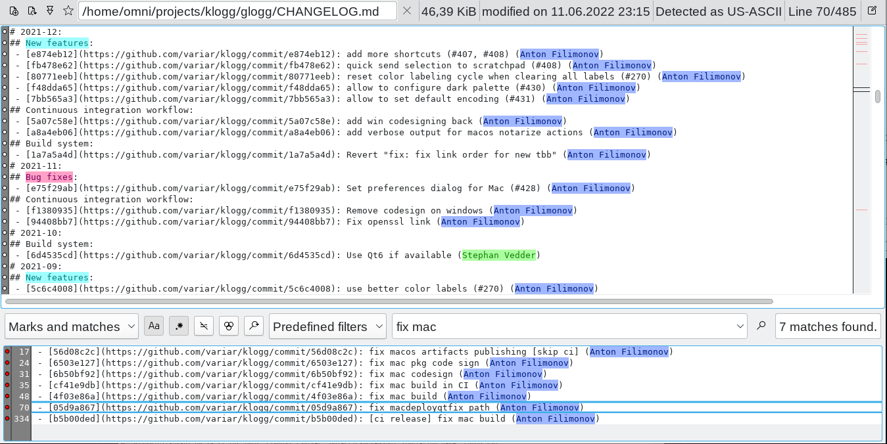

klogg
A fast, smart log explorer. Browse and search through huge log files with regular expressions – like grep, less and tail combined in one window.

What it does
Opens huge files instantly
Reads files straight from disk instead of loading them into memory, so 10 GB logs are not a problem.
Powerful search
Perl-compatible regular expressions that can be combined with AND, OR and NOT. Matches are listed in a separate view.
Highlights what matters
Sets of highlighters color the log and the matches, an overview bar shows where they are in the file.
Follows growing files
Watches files on disk and reloads them as they change, like tail -f.
Any encoding
Detects UTF-8, UTF-16, CP1251 and many other encodings automatically.
Small things that help
Scratchpad, favorite files, color labels, archive extraction, dark mode and configurable shortcuts.
Screenshots


Download
Get the file for your system from the latest release (or the development build):
| System | File |
|---|---|
| Windows 10/11 (64-bit) | …-x64-Qt6-setup.exe or …-portable.zip |
| Ubuntu 24.04 | …-noble.deb |
| Ubuntu 26.04 | …-resolute.deb |
| Other Linux (glibc 2.35+) | …-x86_64.AppImage |
| macOS on Apple Silicon | …-mac-arm64.dmg |
Getting started
- Install the package: run the Windows installer,
sudo apt install ./klogg-*.debon Ubuntu, orchmod +xand start the AppImage. - Open a log file – drag it onto the window or use Ctrl+O.
- Type a regular expression in the search box and press Enter. Matching lines appear below the log.
- Press f to follow the end of the file while it grows.
Shortcuts
| Keys | Action |
|---|---|
| Ctrl+S | Focus the search box |
| j / k | Move the selection down / up |
| g / Shift+G | Jump to the first / last line |
| Ctrl+L | Jump to a line number |
| ' then n / N | Quick find on screen, next / previous match |
| * / / | Next / previous occurrence of the selected text |
| m, [ / ] | Mark a line, jump to previous / next mark |
| f | Follow mode (like tail -f) |
| F5 | Reload the file |
| Ctrl+Shift+O | Switch between opened files |
Good to know
- The macOS app is not signed yet: on first start right-click it and choose Open, or run
xattr -dr com.apple.quarantine /Applications/klogg.app. - AppImages need FUSE 2 – on recent Ubuntu install
libfuse2t64. - klogg sends no telemetry. It only checks for updates about once a week by downloading a small file from GitHub; this can be turned off in the options. This site uses no cookies or analytics.
- This is a maintenance fork of klogg by Anton Filimonov, which started as a fork of glogg by Nicolas Bonnefon. It was brought up to date with current compilers, Qt 6 and libraries using Claude Code.
Authors
- Anton Filimonov – klogg
- Initial work – Nicolas Bonnefon – glogg
- Fork maintenance – wojtekadams, uplift done with Claude Code